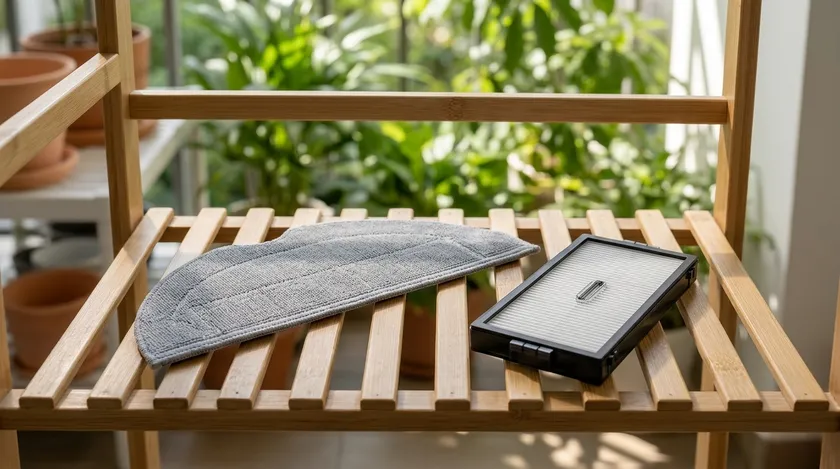
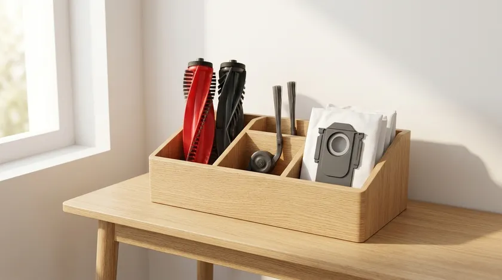
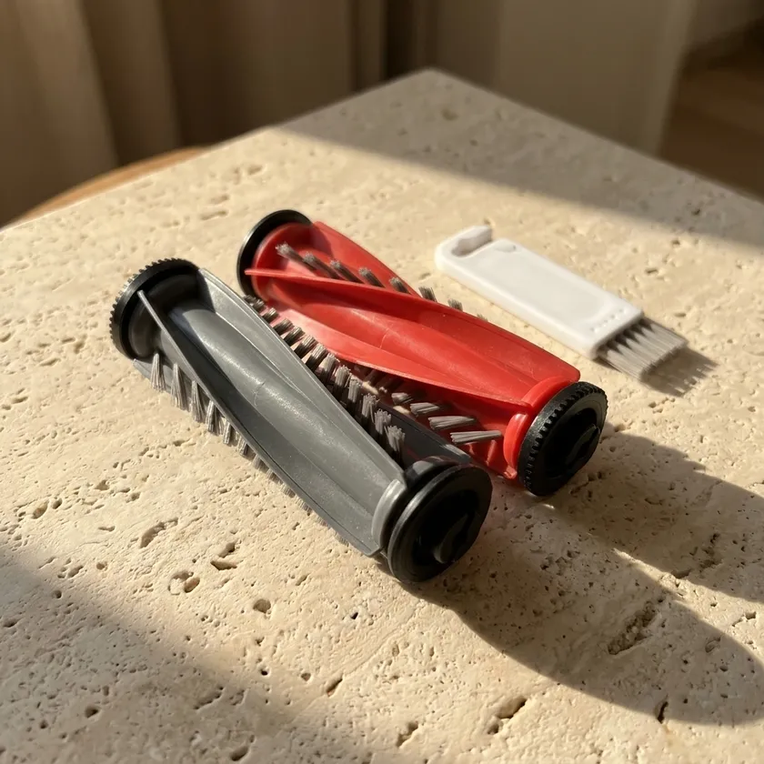

로보락 (Roborock)
로보락 S10 MaxV Ultra 필터·더스트백 서랍 정리와 9종 세트 선택법
글·구성: 제이상점 · 기종별 1:1 호환 실물 점검 · 교체 주기 비교표 · 스마트스토어 패키지 안내

핵심 관리 · 선택 체크포인트
- 더스트백이나 먼지통 필터를 교체하려 수납함을 열었을 때 새 부품이 종류별로 나뉘어 있으면 필요한 부품만 바로 꺼내 장착할 수 있습니다.
- 중앙 세로탭 필터·반원형 물걸레 통풍 건조와 3칸 캐디 수납: S10 MaxV Ultra 필터는 검은색 직사각 프레임 가운데 세로 방향 손잡이 탭이 달린 구조입니다.
- S10 MaxV Ultra 9가지 필수 옵션 한눈에 비교하기: S10 MaxV Ultra는 머리카락을 가운데 틈으로 모아 흡입하는 원추형 듀오디바이드 브러시와 중앙 세로탭 직사각 필터 규격을 사용합니다.
- 수납함 한 칸에 세척 후 건조 중인 필터와 새 필터 자리를 나누어 두면 물기가 덜 마른 필터를 실수로 끼우는 일을 줄일 수 있습니다.
- 듀오디바이드 원추형 롤러와 회색 슬라이딩 칼라 더스트백 점검 포인트: 빨간색·검은색 원추형 브러시 2개가 마주 보는 듀오디바이드 브러시는 가운데 흡입 통로와 회전축 주변에 낀 먼지를 털어 주고, 도크 더스트백은 회색 플라스틱 슬라이딩 가이드가 끝까지 밀착되도록 끼워 주면 먼지 누출 없이 안정적으로 작동합니다.
실물 부품 디테일 · 관리 구성 이미지




부품 규격 · 점검 기준표
| 세제 구성 구분 | 선택 가능한 필수 옵션 | 추천 선택 상황 |
|---|---|---|
| 호환세제 기본 포함 | 1년세트 / 6개월세트 / 3개월세트 | 소모품 5종과 세제를 실속 있게 한 번에 챙기고 싶을 때 |
| 정품세제 변경 | 1년·6개월·3개월｜호환세제→정품세제 업그레이드 | 호환 부품 세트에 로보락 정품 1L 클리너를 함께 받고 싶을 때 |
| 소모품 단품 구성 | 1년·6개월·3개월｜세제 미포함 | 집에 전용 클리너가 충분히 남아 있어 브러시·필터·걸레·봉투만 필요할 때 |
💡 교체 주기가 겹치는 필터·브러시·물걸레·더스트백은 단품 배송비를 여러 번 내기보다 로보락 S10 MaxV Ultra 기간별 세트(3개월·6개월·1년)로 미리 구비해 두면 물세척 후 24시간 교대 건조까지 끊김 없이 관리할 수 있습니다.
자주 묻는 질문 (FAQ)
Q. 로보락S10MaxVUltra의 호환세제 기본 포함 규격과 관리 기준은 무엇인가요?
A. 1년세트 / 6개월세트 / 3개월세트 규격을 사용하며, 소모품 5종과 세제를 실속 있게 한 번에 챙기고 싶을 때 기준으로 점검·교체하면 청소 효율을 안정적으로 유지할 수 있습니다.
Q. 로보락S10MaxVUltra의 정품세제 변경 규격과 관리 기준은 무엇인가요?
A. 1년·6개월·3개월｜호환세제→정품세제 업그레이드 규격을 사용하며, 호환 부품 세트에 로보락 정품 1L 클리너를 함께 받고 싶을 때 기준으로 점검·교체하면 청소 효율을 안정적으로 유지할 수 있습니다.
Q. 로보락S10MaxVUltra의 소모품 단품 구성 규격과 관리 기준은 무엇인가요?
A. 1년·6개월·3개월｜세제 미포함 규격을 사용하며, 집에 전용 클리너가 충분히 남아 있어 브러시·필터·걸레·봉투만 필요할 때 기준으로 점검·교체하면 청소 효율을 안정적으로 유지할 수 있습니다.
제이상점 1:1 검수 추천 패키지 · 구매 안내
메인 추천 구성
대표 구성 참고가 70,100원대 (옵션·쿠폰별 스마트스토어 결제 화면 기준)
1년세트1년세트｜호환세제→정품세제 업그레이드6개월세트6개월세트｜호환세제→정품세제 업그레이드3개월세트
☑️ 주문 전 확인해 두면 좋은 제이상점 안심 포인트
· 기종별 1:1 전용 규격 검수: 모델명·연식에 맞는 호환·정품 구성을 검수해 오주문 불안을 줄였습니다.
· 해외직배송 미리 주문 팁: 중국 구매대행·해외직배송 상품이므로 마지막 여분 1개를 꺼내 쓰는 시점에 개인통관고유부호와 함께 여유 있게 주문해 두시면 훨씬 경제적인 비용으로 끊김 없이 교체하실 수 있습니다.
· 기종별 1:1 전용 규격 검수: 모델명·연식에 맞는 호환·정품 구성을 검수해 오주문 불안을 줄였습니다.
· 해외직배송 미리 주문 팁: 중국 구매대행·해외직배송 상품이므로 마지막 여분 1개를 꺼내 쓰는 시점에 개인통관고유부호와 함께 여유 있게 주문해 두시면 훨씬 경제적인 비용으로 끊김 없이 교체하실 수 있습니다.
📖 더 많은 가정 내 사용 스토리와 상세 후기가 궁금하시다면
📱 네이버 블로그 모바일 원문 보기 ↗